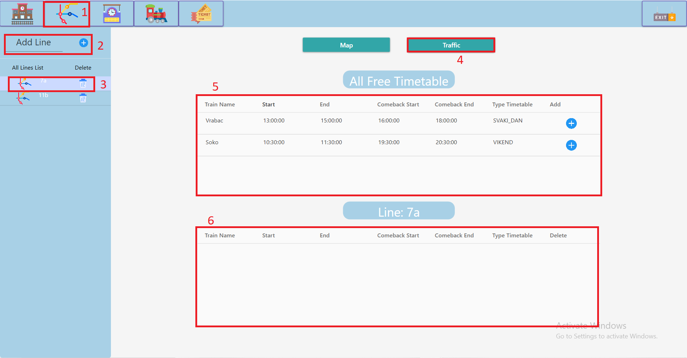

Prikaz Traffic stranice za manipulaciju linijama u sistemu:

1. Klikom na ikonicu mape se otvara Map page.
2. Dodavanje nove linije. Popunjavanjem teklstualnog polja(imena linije) i zatim klik na plus dugme.
3. Dvoklikom na ikonicu linije se otvara prikaz te linije.Liniju je moguce obrisati klikom na dugme kante.
4. Klikom na Traffic dugme se otvara Traffic Page i dve tabele na slici oznacene sa 5 i 6.
5. Tabela svih slobodnih redova voznje (redova voznje koji nisu zauzeti).Klikom na plus se red voznje
prebacuje u tabelu 6
6. Tabela redova voznje za selektovanu liniju selektovanu u koraku 3.